Templar
Tank z tarczą i mieczem jednoręcznym. Trzyma przód grupy i osłania sojuszników. Broń: Longsword. Rola: Tank.
Brak osobnego opracowania autora. Liczby i specjalizacje ze źródeł pod kartą; zalecany poziom tylko tam, gdzie źródło go podaje.
Skille aktywne
Vicious Strike
20
Zadaje 79 + 94,8% of Attack obrażeń do 4 wrogów w 4 m i zwiększa Enmity. przywraca 100 MP.
Poziom 10: Obrażenia: 642 + 94,8% of Attack · PvP obrażeń 423 + 65% of Attack
Endgame tank PvE: do 20. Na 8 Multi-Hit albo pochłanianie HP, na 12 −2 s CD Warding Strike, na 16 łańcuch Threatening Blow.
Specjalizacje
- poziom 8+20% MP przywrócone
- poziom 8Pochłania 1% HP
- poziom 8+50% Multi-Hit przy trafieniu
- poziom 12-2s [Warding Strike] cooldown przy trafieniu
- poziom 16Dodaje [Threatening Blow] umiejętność łańcuchowa
karta skilla na aion2.gg · aion2.gg, tooltip poziomu 1 (baza klienta). Kolumna poziomu 10 lub 20 jest podpisana osobno.
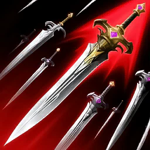
Pummel
20 albo 16
Zadaje 93 + 119,5% of Attack obrażeń do 4 wrogów w 4 m i zwiększa Enmity. 3 Stagger Gauge Damage
Poziom 10: Obrażenia: 802 + 119,5% of Attack · PvP obrażeń 577 + 88,7% of Attack
Endgame: 20, a gdy brakuje poziomów — 16. Levelowanie solo: Punishing Strike pochłania 3% HP; z Clerikiem −20% MP.
Specjalizacje
- poziom 8-20% MP consumed
- poziom 8[Punishing Strike] pochłania 3% HP
- poziom 8Zadaje do 12% więcej obrażeń gdy trafi mniej celów
- poziom 12-1s [Punishment] cooldown przy trafieniu
- poziom 16[Punishing Strike] daje dodatkowe obrażenia przy trafieniu
karta skilla na aion2.gg · aion2.gg, tooltip poziomu 1 (baza klienta). Kolumna poziomu 10 lub 20 jest podpisana osobno.
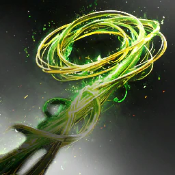
Poach
12
Zadaje 49 + 87,5% of Attack obrażeń cel w 20 m i przyciąga them w front of postać, z 75% szansy na Root for 2s. 100% szansy na Root na NPC cele. 10 Stagger Gauge Damage
Poziom 10: Obrażenia: 569 + 87,5% of Attack · PvP obrażeń 576 + 88,5% of Attack
Endgame: 12. Levelowanie: reset CD po zabiciu (farm) albo dojście do celu (boss).
Specjalizacje
- poziom 8Moves do cel jeśli cel has Incapacitated Immunity
- poziom 8-20% Status Effect Resist for 5s przy trafieniu
- poziom 8Reset CD po pokonaniu wroga
- poziom 1210% Max HP Protective Shield
- poziom 1650% szansy na Stun for 3s
karta skilla na aion2.gg · aion2.gg, tooltip poziomu 1 (baza klienta). Kolumna poziomu 10 lub 20 jest podpisana osobno.
Shield Smite
16
Zadaje 173 + 175,75% of Attack obrażeń do 4 wrogów w 4 m. Has 60% szansy na Stun na celu for 3s. Triggers [Judgment] for 2s. 100% szansy na Stun na NPC cele. 10 Stagger Gauge Damage
Poziom 10: Obrażenia: 1 281 + 175,75% of Attack · PvP obrażeń 848 + 116,4% of Attack
Endgame: 16. Levelowanie: zdejmuje koszt MP i przywraca 200 MP przy trafieniu, plus −2 s CD.
Specjalizacje
- poziom 8+1s Stun czas trwania
- poziom 8Usuwa MP Cost i przywraca 200 MP przy trafieniu
- poziom 850% szansy na trigger [Debilitating Smash] przy trafieniu
- poziom 12-2s cooldown
- poziom 16AoE Stun
karta skilla na aion2.gg · aion2.gg, tooltip poziomu 1 (baza klienta). Kolumna poziomu 10 lub 20 jest podpisana osobno.
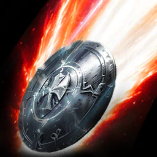
Judgment
20
Zadaje 227 + 229,5% of Attack obrażeń cel w 4 m i zwiększa Enmity. 5 Stagger Gauge Damage
Poziom 10: Obrażenia: 1 673 + 229,5% of Attack · PvP obrażeń 705 + 96,75% of Attack
Endgame tank PvE (Aion 2 Companion): pierwszy skill ponad 10. Specjalizacje: dodatkowe obrażenia (8), krytyk (12), brak cooldownu (16).
Specjalizacje
- poziom 8Pochłania 1% HP
- poziom 8Zadaje dodatkowe obrażenia na attacking cel z efektem Impact-type status
- poziom 8Dodatkowe obrażenia przy trafieniu
- poziom 12Critical Hit przy trafieniu
- poziom 16Usuwa cooldown
karta skilla na aion2.gg · aion2.gg, tooltip poziomu 1 (baza klienta). Kolumna poziomu 10 lub 20 jest podpisana osobno.
Flash Rampage
niski
Zadaje 152 + 108% of Attack obrażeń cel z efektem Stagger w 4 m i zwiększa Enmity.
Poziom 10: Obrażenia: 887 + 108% of Attack · PvP obrażeń 846 + 103% of Attack
Companion: większość buildów go pomija. Przy levelowaniu zostaw nisko.
Specjalizacje
- poziom 8Pochłania 5% HP
- poziom 8Przywraca 120 MP przy trafieniu
- poziom 8Changes do skill
- poziom 12Multi-Hit przy trafieniu
- poziom 16-1s do all skill cooldowns przy trafieniu
karta skilla na aion2.gg · aion2.gg, tooltip poziomu 1 (baza klienta). Kolumna poziomu 10 lub 20 jest podpisana osobno.
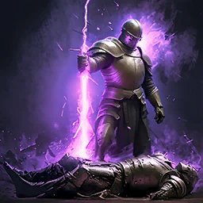
Debilitating Smash
12
Zadaje 336 + 184% of Attack obrażeń do 4 wrogów w 4 m i inflicts Debilitate for 5s na Block. Debilitate: zmniejsza Defense o 25% 10 Stagger Gauge Damage
Poziom 10: Obrażenia: 1 656 + 184% of Attack · PvP obrażeń 1 151 + 127,9% of Attack
Endgame tank PvE: 12.
Specjalizacje
- poziom 830% szansy na Stun for 3s
- poziom 8+3s Debilitate czas trwania
- poziom 8-60% Incoming Heal w trakcie Debilitate
- poziom 12Ignoruje Block i Evasion i lands as Multi-Hit
- poziom 1625% szansy na reset cooldown na Block
karta skilla na aion2.gg · aion2.gg, tooltip poziomu 1 (baza klienta). Kolumna poziomu 10 lub 20 jest podpisana osobno.
Warding Strike
16
Zadaje 388 + 212,5% of Attack obrażeń do 4 wrogów w 5 m of postać. natychmiast przywraca 180-198 HP i daje Warding do postać for 10s. Triggers [Judgment] for 2s. Warding: zwiększa PvE Damage Tolerance o 20% i PvP Damage Tolerance o 10% 5 Stagger Gauge Damage
Poziom 10: Obrażenia: 1 912 + 212,5% of Attack · PvP obrażeń 1 013 + 112,6% of Attack — HP restore: Min leczenie 1 015 · Max leczenie 1 117
Endgame: 16. Specjalizacja: −5 s CD; na 16 +10% PvE Damage Tolerance dla drużyny.
Specjalizacje
- poziom 8-5s cooldown
- poziom 8+100 Block w trakcie Warding
- poziom 8Leczenie over Time w trakcie Warding
- poziom 12Dodaje PvE Damage Tolerance i PvP Damage Tolerance zwiększa effect gdy trafi więcej celów do Warding
- poziom 16+10% PvE Damage Tolerance i +5% PvP Damage Tolerance do członków drużyny na skill use
karta skilla na aion2.gg · aion2.gg, tooltip poziomu 1 (baza klienta). Kolumna poziomu 10 lub 20 jest podpisana osobno.
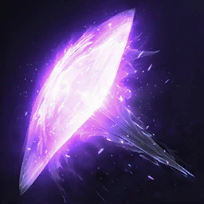
Shield Rush
12
Doskakuje do cel w 10 m i zadaje 258 + 105% of Attack obrażeń po using [Dodge] albo podczas flying. Has 30% szansy na Stun for 3s. Triggers [Judgment] for 2s. 100% szansy na Stun na NPC cele. 20 Stagger Gauge Damage
Poziom 10: Obrażenia: 1 004 + 105% of Attack · PvP obrażeń 975 + 101,9% of Attack
Endgame tank PvE: 12. Wyżej głównie pod PvP.
Specjalizacje
- poziom 8Przywraca 300 Stamina przy trafieniu
- poziom 8+10m range
- poziom 8Charge Skill Changes do Charge Skill i zadaje AoE obrażeń
- poziom 12-10s cooldown
- poziom 16+25% Stun Chance
karta skilla na aion2.gg · aion2.gg, tooltip poziomu 1 (baza klienta). Kolumna poziomu 10 lub 20 jest podpisana osobno.
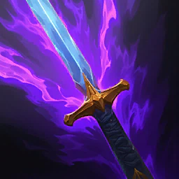
Annihilate
brak danych
Zadaje 791 + 321,75% of Attack obrażeń cel z efektem Stun albo Knockdown w 4 m z 30% szansy na Knockdown for 3s. 100% szansy na Knockdown na NPC cele. Has 5% szansy na trigger gdy attacking cel z Incapacitated Immunity.
Poziom 10: Obrażenia: 3 079 + 321,75% of Attack · PvP obrażeń 1 333 + 139,3% of Attack
Specjalizacje
- poziom 8+50% Multi-Hit przy trafieniu
- poziom 8+20% Knockdown Chance
- poziom 8+100% obrażeń cele z Incapacitated Immunity
- poziom 12-10s cooldown
- poziom 16Changes do AoE Skill
karta skilla na aion2.gg · aion2.gg, tooltip poziomu 1 (baza klienta). Kolumna poziomu 10 lub 20 jest podpisana osobno.
Punishment
20
Selects cel w 20 m i zadaje 1 394–4 184 + 430,5–1 291,5% of Attack obrażeń do 4 wrogów w 4 m of cel i daje Executor effect do postać for 20s. Executor: zwiększa Accuracy o 200, PvE Damage Boost o 20%, i PvP Damage Boost o 10% Max 3 Charge Levels
Poziom 10: Obrażenia: 4 300 + 430,5% of Attack · PvP obrażeń 1 298 + 130% of Attack
Endgame: 20. Levelowanie: +30% Skill Speed. Na 16 „ignoruje Block i Evasion, krytyk”; pomiń „w ruchu”.
Specjalizacje
- poziom 8Charge Skill pochłania 10% HP
- poziom 8Charge Skill Inflicts obrażeń over Time do cel przy trafieniu
- poziom 8Charge Skill +30% Skill Speed
- poziom 12Charge Skill Changes do skill
- poziom 16Charge Skill ignoruje Block i Evasion i lands as Critical Hit
karta skilla na aion2.gg · aion2.gg, tooltip poziomu 1 (baza klienta). Kolumna poziomu 10 lub 20 jest podpisana osobno.

Defiance
12
Usuwa Stun, Knockdown, Airborne, Grab, Frost, i Fear od postać i daje Tenacity for 5s. Tenacity: daje Status Effect Immunity redukcja CD nie dział effects.
Endgame tank PvE: 12. Pod PvP Companion każe podnieść też Shield Rush, Defiance, Ironclad Defense i Enhance Health.
Specjalizacje
- poziom 8Dodaje [Capture] umiejętność łańcuchowa
- poziom 8Przywraca 1 000 Stamina na using [Defiance]
- poziom 8Przywraca 20% HP na using [Defiance]
- poziom 12+2s Tenacity czas trwania
- poziom 16+50% PvE Damage Tolerance i +25% PvP Damage Tolerance for Tenacity czas trwania
karta skilla na aion2.gg · aion2.gg, tooltip poziomu 1 (baza klienta). Kolumna poziomu 10 lub 20 jest podpisana osobno.
Pasywki
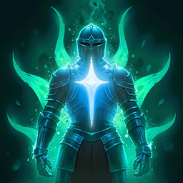
Enhance Health
brak danych
Zwiększa postać's HP o 250. zwiększa Max HP o additional 7,5% i Incoming Heal o 6%.
Pasywka nie ma specjalizacji.
karta skilla na aion2.gg · aion2.gg, tooltip poziomu 1 (baza klienta). Kolumna poziomu 10 lub 20 jest podpisana osobno.
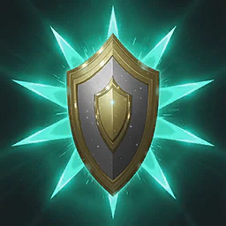
Warding Shield
brak danych
Zwiększa postać's Block o 200 i przywraca 53-64 HP na Block. Cooldown: 3s
Pasywka nie ma specjalizacji.
karta skilla na aion2.gg · aion2.gg, tooltip poziomu 1 (baza klienta). Kolumna poziomu 10 lub 20 jest podpisana osobno.
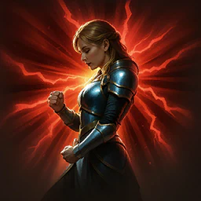
Punishing Benediction
brak danych
Zwiększa postać's Critical Hit o 100 i daje Punishing Benediction for 10s gdy landing attack. Punishing Benediction: Has 50% szansy na zadaje 69 + 38% of Attack dodatkowe obrażenia do cel gdy landing attack. Cooldown: 1s
Pasywka nie ma specjalizacji.
karta skilla na aion2.gg · aion2.gg, tooltip poziomu 1 (baza klienta). Kolumna poziomu 10 lub 20 jest podpisana osobno.
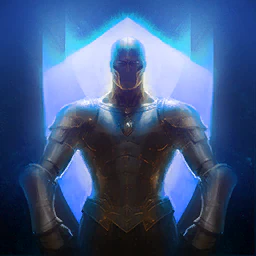
Ironclad Defense
brak danych
Zwiększa postać's Defense o 7% i Endurance o 1%.
Pasywka nie ma specjalizacji.
karta skilla na aion2.gg · aion2.gg, tooltip poziomu 1 (baza klienta). Kolumna poziomu 10 lub 20 jest podpisana osobno.
Guarding Seal
brak danych
Daje Guarding Seal that blokuje obrażeń równe 21% of Max HP for 30s gdy HP is 50% albo less. Cooldown: 1min
Pasywka nie ma specjalizacji.
karta skilla na aion2.gg · aion2.gg, tooltip poziomu 1 (baza klienta). Kolumna poziomu 10 lub 20 jest podpisana osobno.
Impact Hit
ponad 10
Zwiększa postać's Impact-type Chance o 11,2% i Double Chance o 0,3%.
Po Fury, równo z Insulting Roar (endgame tank).
Pasywka nie ma specjalizacji.
karta skilla na aion2.gg · aion2.gg, tooltip poziomu 1 (baza klienta). Kolumna poziomu 10 lub 20 jest podpisana osobno.
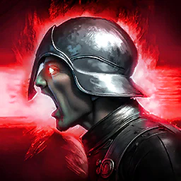
Insulting Roar
ponad 10
Zwiększa Enmity Boost o 100% for postać i zwiększa Attack o 5,5% for 5s na landing Front Attack. Cooldown: 5s
Po Fury, równo z Impact Hit (endgame tank).
Pasywka nie ma specjalizacji.
karta skilla na aion2.gg · aion2.gg, tooltip poziomu 1 (baza klienta). Kolumna poziomu 10 lub 20 jest podpisana osobno.
Fury
ponad 10
Zwiększa Front Attack Damage Boost o 0,3% for postać, i zwiększa PvE Damage Boost o 5,5% i PvP Damage Boost o 2,75% for 20s for postać i członków drużyny na Block. Cooldown: 1s
Pasywka ponad 10: najpierw Fury, potem Insulting Roar i Impact Hit mniej więcej równo.
Pasywka nie ma specjalizacji.
karta skilla na aion2.gg · aion2.gg, tooltip poziomu 1 (baza klienta). Kolumna poziomu 10 lub 20 jest podpisana osobno.
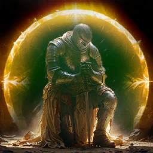
Survival Willpower
brak danych
Zwiększa postać's Status Effect Resist o 17%. zwiększa PvE Damage Tolerance o 12% i PvP Damage Tolerance o 6% for 5s gdy z efektem Stun, Knockdown, Airborne, Frost, albo Fear. zwiększa Status Effect Resist o 10% for 5s gdy hit podczas z efektem Stun, Knockdown, Airborne, Frost, albo Fear (do 10 stacki). Damage Tolerance zwiększa Cooldown: 1min Status Effect Resist zwiększa Cooldown: 1s
Pasywka nie ma specjalizacji.
karta skilla na aion2.gg · aion2.gg, tooltip poziomu 1 (baza klienta). Kolumna poziomu 10 lub 20 jest podpisana osobno.
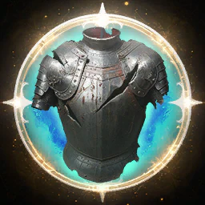
Block Pain
brak danych
Daje Block Pain for 10s gdy struck o wróg. Block Pain: zwiększa PvE Damage Tolerance o 11% i PvP Damage Tolerance o 5,5% Cooldown: 20s
Pasywka nie ma specjalizacji.
karta skilla na aion2.gg · aion2.gg, tooltip poziomu 1 (baza klienta). Kolumna poziomu 10 lub 20 jest podpisana osobno.
Stygmy
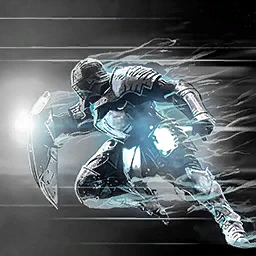
Doom Shield
w zestawie
Doskakuje do cel w 20 m i zadaje 1 254 + 219% of Attack obrażeń. Has 75% szansy na Knockdown for 3s. daje Protective Shield that blokuje obrażeń równe 5% Max HP for 5s przy trafieniu. Triggers [Judgment] for 3s. 100% szansy na Knockdown na NPC cele. 20 Stagger Gauge Damage
Poziom 20: Obrażenia: 3 514 + 219% of Attack · PvP obrażeń 2 210 + 137,7% of Attack
Otwiera Judgment na 3 s; od poziomu 5 resetuje Annihilate. Zamiennie Noble Armor.
Perki stygmy
- poziom 5Resets [Annihilate] cooldown przy trafieniu
- poziom 10+200 Block for 5s przy trafieniu
- poziom 15Reset CD po pokonaniu wroga
- poziom 20+25% Knockdown Chance
karta skilla na aion2.gg · aion2.gg, tooltip poziomu 1 (baza klienta). Kolumna poziomu 10 lub 20 jest podpisana osobno.
Shield of Protection
w zestawie
Na chwilę zwiększa Block obrażeń Reduction o 100% i gwarantuje Block. przywraca 110 MP i Stamina once na Block.
Poziom 20: Applies effect: Effect poziom 20
Cztery sloty endgame: Taunt, Shield of Protection, Battlefield Banner oraz Doom Shield albo Noble Armor.
Perki stygmy
- poziom 5Sustained Skill +1 użycie z rzędu
- poziom 10Sustained Skill Changes do skill
- poziom 15Sustained Skill +20% Move Speed for 3s na Block
- poziom 20Sustained Skill przywraca 10% HP once na Block
karta skilla na aion2.gg · aion2.gg, tooltip poziomu 1 (baza klienta). Kolumna poziomu 10 lub 20 jest podpisana osobno.
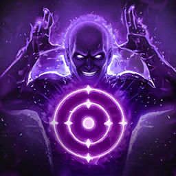
Taunt
co najmniej 15
Zadaje 888 + 155% of Attack obrażeń cel w 20 m i zwiększa Enmity. Inflict Shrink for 15s przy trafieniu i has 50% szansy na Taunt for 3s jeśli cel is player. Shrink: zmniejsza Accuracy o 200 i Attack o 10% 20 Stagger Gauge Damage
Poziom 20: Obrażenia: 2 487 + 155% of Attack · PvP obrażeń 1 911 + 119,1% of Attack
Stygma tanka. CD 30 s (25 s na poziomie 15). Od 5 Shrink ścina PvE Damage Tolerance celu o 10%.
Perki stygmy
- poziom 5Dodaje 10% PvE Damage Tolerance reduction i 5% PvP Damage Tolerance reduction effect do Shrink
- poziom 10+10% Shrink obniżenie Attack
- poziom 15-5s cooldown
- poziom 20+2s Taunt czas trwania, +5s Shrink czas trwania
karta skilla na aion2.gg · aion2.gg, tooltip poziomu 1 (baza klienta). Kolumna poziomu 10 lub 20 jest podpisana osobno.
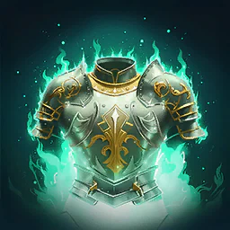
Second Skin
brak danych
Zwiększa PvE Damage Tolerance o 30% i PvP Damage Tolerance o 15% for 10s. nie podlega wydłużeniu CD.
Poziom 20: Applies effect: czas trwania 20s
Perki stygmy
- poziom 5+10% all Element Tolerance for czas trwania
- poziom 10+20% Block for czas trwania
- poziom 15X1,5 [Ironclad Defense] effect for czas trwania
- poziom 20+20% PvE Damage Tolerance zwiększa i +10% PvP Damage Tolerance zwiększa
karta skilla na aion2.gg · aion2.gg, tooltip poziomu 1 (baza klienta). Kolumna poziomu 10 lub 20 jest podpisana osobno.
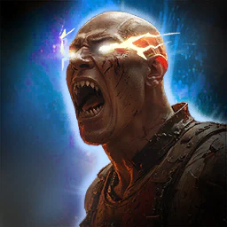
Armor of Balance
brak danych
Zwiększa Impact-type Resist o 50% for 10s.
Poziom 20: Applies effect: czas trwania 20s
Perki stygmy
- poziom 5+20% Ailment-type, Mental-type Resist for czas trwania
- poziom 10+20% Move Speed for czas trwania
- poziom 15X1,5 [Warding Shield] effect for czas trwania
- poziom 20+50% additional Impact-type Resist
karta skilla na aion2.gg · aion2.gg, tooltip poziomu 1 (baza klienta). Kolumna poziomu 10 lub 20 jest podpisana osobno.
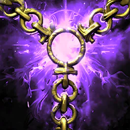
Grapple
brak danych
Selects cel w 20 m i zadaje 1 045 + 182,5% of Attack obrażeń do 4 wrogów w 7 m of cel, pulling them w front of postać. Inflicts Root for 3s. 20 Stagger Gauge Damage
Poziom 20: Obrażenia: 2 929 + 182,5% of Attack · PvP obrażeń 2 046 + 127,5% of Attack
Perki stygmy
- poziom 550% szansy na Stun for 3s przy trafieniu
- poziom 1020% of Max HP as Protective Shield for 10s na use
- poziom 15-30s cooldown
- poziom 20Do +20% PvE Damage Tolerance i +10% PvP Damage Tolerance gdy trafi więcej celów
karta skilla na aion2.gg · aion2.gg, tooltip poziomu 1 (baza klienta). Kolumna poziomu 10 lub 20 jest podpisana osobno.
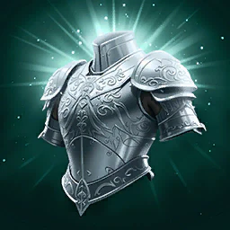
Noble Armor
zamiennik
Zwiększa Max HP o 5,4% for 2min i natychmiast przywraca HP o 5,4% of Max HP. buff dispel go nie zdejmuje.
Poziom 20: Applies effect: Effect poziom 20 — HP restore (%): leczenie 1 300
Zamiast Doom Shield: Max HP, a na 10 i 15 mnoży Insulting Roar i Fury ×1,5.
Perki stygmy
- poziom 5+5% Defense for czas trwania
- poziom 10X1,5 [Insulting Roar] effect for czas trwania
- poziom 15X1,5 [Fury] effect for czas trwania
- poziom 20+10% Incoming Heal for czas trwania
karta skilla na aion2.gg · aion2.gg, tooltip poziomu 1 (baza klienta). Kolumna poziomu 10 lub 20 jest podpisana osobno.
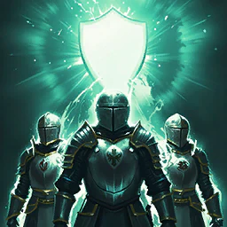
Comrade in Arms
brak danych
Zwiększa postać's PvE Damage Tolerance o 20% i PvP Damage Tolerance o 10% i redirects obrażeń taken o drużyna member w 40 m każdy time they are attacked, sharing 50% do postać i 50% do attacked drużyna member for 6s. nie podlega wydłużeniu CD.
Poziom 20: Applies effect: Effect poziom 20
Perki stygmy
- poziom 5Przywraca 25% of Max HP once jeśli hit w trakcie Comrade w Arms podczas HP is 25% albo less
- poziom 10X1,5 [Guarding Seal] Protective Shield effect for czas trwania
- poziom 15X1,5 [Block Pain] effect for czas trwania
- poziom 20Przywraca 50% of postać's Max HP gdy effect ends
karta skilla na aion2.gg · aion2.gg, tooltip poziomu 1 (baza klienta). Kolumna poziomu 10 lub 20 jest podpisana osobno.
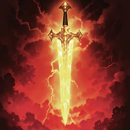
Empyrean Lord's Punishment
pod stagger
Selects cel w 20 m i zadaje 939 + 164% of Attack obrażeń do 4 wrogów w 4 m of cel z 50% szansy na Stun for 3s. 100% szansy na Stun na NPC cele. 50 Stagger Gauge Damage
Poziom 20: Obrażenia: 2 632 + 164% of Attack · PvP obrażeń 1 956 + 121,9% of Attack
Wkładka na sprawdzenie staggera: 50 Stagger, 100 na poziomie stygmy 10 — najwięcej w zestawie.
Perki stygmy
- poziom 5Do +20% obrażeń gdy less cele hit
- poziom 10+50 Stagger Gauge Damage
- poziom 15+10% PvE Damage Boost i +5% PvP Damage Boost for 10s przy trafieniu
- poziom 20+25% Stun Chance
karta skilla na aion2.gg · aion2.gg, tooltip poziomu 1 (baza klienta). Kolumna poziomu 10 lub 20 jest podpisana osobno.
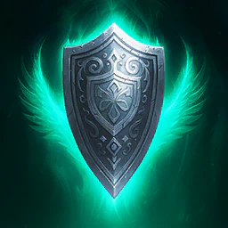
Nezekan's Shield
brak danych
Daje Protective Shield that blokuje obrażeń równe 41% of Max HP for 3s do postać i pobliskich członków drużyny w 40 m.
Poziom 20: Applies effect: Effect poziom 20
Perki stygmy
- poziom 5+20% all Element Tolerance for Protective Shield czas trwania
- poziom 10+2s Protective Shield czas trwania
- poziom 15+20% PvE Damage Tolerance i +10% PvP Damage Tolerance for Protective Shield czas trwania
- poziom 20Przywraca 20% of Max HP gdy Protective Shield is removed
karta skilla na aion2.gg · aion2.gg, tooltip poziomu 1 (baza klienta). Kolumna poziomu 10 lub 20 jest podpisana osobno.
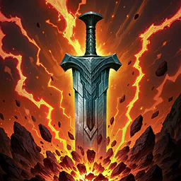
Executing Blade
brak danych
Zadaje 1 335 + 233% of Attack obrażeń do 4 wrogów w 4 m i zmniejsza Defense o 30% for 5s. zadaje 20% więcej obrażeń na attacking cel inflicted z Impact-type status. 20 Stagger Gauge Damage
Poziom 20: Obrażeń 1: 3 739 + 233% of Attack · PvP obrażeń 2 950 + 183,82% of Attack — obrażeń 2: 4 487 + 279,6% of Attack · PvP obrażeń 3 196 + 199,16% of Attack
Perki stygmy
- poziom 5-15s cooldown
- poziom 10Inflict Exposed for 5s przy trafieniu
- poziom 15Critical Hit przy trafieniu
- poziom 20+30% obrażeń na attacking cel inflicted z Impact-type status
karta skilla na aion2.gg · aion2.gg, tooltip poziomu 1 (baza klienta). Kolumna poziomu 10 lub 20 jest podpisana osobno.
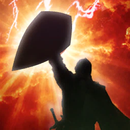
Battlefield Banner
w zestawie
Zwiększa Attack proportional do Defense for 10s.
Poziom 20: Applies effect: czas trwania 20s
Attack liczony z Defense. Poziom 10 dokłada +10% Weapon Damage Boost (Companion).
Perki stygmy
- poziom 5+10% Multi-Hit Chance for czas trwania
- poziom 10+10% Weapon Damage Boost for czas trwania
- poziom 15+20% Attack zwiększa proportional do Defense
- poziom 20-30s cooldown
karta skilla na aion2.gg · aion2.gg, tooltip poziomu 1 (baza klienta). Kolumna poziomu 10 lub 20 jest podpisana osobno.
Assault Fury
brak danych
Selects cel w 20 m i zadaje 951 + 166% of Attack obrażeń do 4 wrogów w 4 m z 30% szansy na Stun for 3s. 100% szansy na Stun na NPC cele. zwiększa Defense o do 20% proportional do number of cele hit.
Poziom 20: Obrażeń 1: 2 664 + 166% of Attack · PvP obrażeń 1 966 + 122,5% of Attack — obrażeń 2: 2 050 · % of Attack 127,75% · PvP obrażeń 1 966 + 122,5% of Attack
Perki stygmy
- poziom 5+20% Attack for 5s przy trafieniu
- poziom 10500 MP obrażeń przy trafieniu
- poziom 15+10m range
- poziom 20+20% Stun Chance
karta skilla na aion2.gg · aion2.gg, tooltip poziomu 1 (baza klienta). Kolumna poziomu 10 lub 20 jest podpisana osobno.
Build PvE
Build z Aion 2 Companion (Global, sezon 1). Liczby na kartach to tooltip poziomu 1 z aion2.gg, o ile karta nie podpisuje poziomu 10 albo 20.
- Levelowanie: Vicious Strike i Pummel tak wysoko, jak puszcza bramka poziomu. Potem Judgment, Punishment, Warding Strike i Annihilate do 8. Punishment jest najmocniejszy wcześnie. Długie AoE i Flash Rampage zostaw nisko.
- Tank grupowy na endgame: Judgment 20, Vicious Strike 20, Pummel 20 (albo 16), Punishment 20, Warding Strike i Shield Smite 16, Poach, Shield Rush, Defiance i Debilitating Smash 12.
- Cztery stygmy: Taunt (co najmniej 15), Shield of Protection, Battlefield Banner oraz Doom Shield albo Noble Armor. Pod stagger: Empyrean Lord's Punishment. Na twardą walkę: Nezekan's Shield, Comrade in Arms albo Second Skin.
- Pasywki ponad 10: Fury, potem Insulting Roar i Impact Hit.
Źródła
- Aion 2 Companion — skille, pasywki, stygmy
- aion2.gg — lista skilli klasy
- aion2.gg — build PvE
- aion2data.com — dane klienta Global
Data tej strony: 11 listopada 2026. Edycja Global (Steam, EU). Nazwy skilli są po angielsku, tak jak w kliencie.